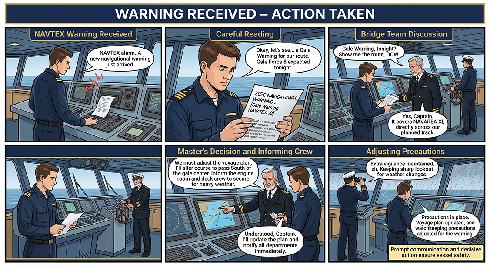

Conversation & Audio
Visual scenario, model exchange, and listening practice. Work through this page, then use the Next Page button to continue.
Warning Received – Action Taken
{kind=link}

6. Sample Conversation
Practise this conversation aloud. Pay attention to message markers, call signs, numbers, read-backs, and the words “Over” and “Out.”
Audio Practice: Unit 7 Sample Conversation
Listen to the complete safety broadcast. Repeat the hazard, position, time, movement, warning, information, and advice.
Coast Radio: SECURITE, SECURITE, SECURITE. All stations, all stations, all stations. This is Phuket Coast Radio.
Coast Radio: Warning. Navigational hazard. Drifting container reported in position zero-seven degrees five-zero minutes North, zero-nine-eight degrees one-five minutes East at one-two-zero-zero UTC.
Coast Radio: Information. Container is drifting south-east at approximately two knots. Advice. Keep a sharp lookout and report sighting to Phuket Coast Radio. Out.
Vessel: Phuket Coast Radio, this is Motor Vessel Andaman Trader. Question. Is the reported container inside the traffic lane? Over.
Coast Radio: Answer. Container is reported near the eastern limit of the traffic lane. Advice. Navigate with caution. Out.
Conversation analysis
The SECURITE message starts by calling all stations, names the coast radio station, gives the hazard position, reports movement, and gives advice. Students should identify which details are warning, information, and advice.
Listening and Pronunciation Drill: NAVTEX Decoding and SECURITE Broadcast Drill
Student task: Listen as your teacher or partner reads the script twice. On the first listening, identify the main situation. On the second listening, write the key information: station name, vessel name, marker used, position/course/time, and action required.
SECURITE, SECURITE, SECURITE. All stations, all stations, all stations.
Warning. Navigational hazard. Drifting container reported in position zero-seven degrees five-zero minutes North, zero-nine-eight degrees one-five minutes East.
Information. Container is drifting south-east at approximately two knots.
Advice. Keep a sharp lookout and report sighting to Phuket Coast Radio. Out.
Pronunciation Focus
- Latitude zero-seven degrees five-zero minutes North.
- Wind Force eight, sea rough.
- Visibility reduced by fog.